MERENDINE FERRERO
Cerca una serie
Nessuna serie trovata.
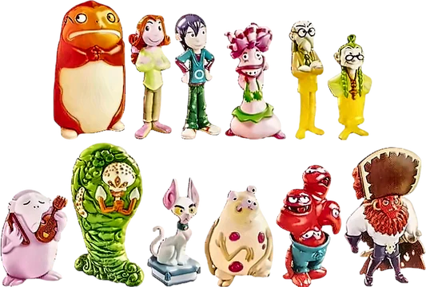
Monster Allergy
12 sorpresine
Apri
2006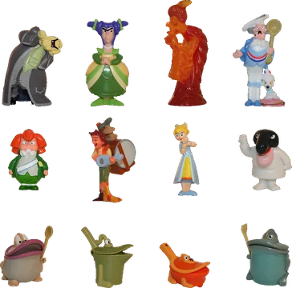
Totò Sapore
12 sorpresine
Apri
2004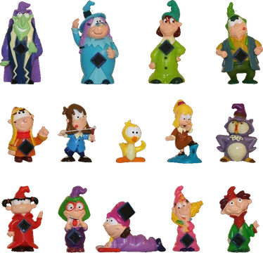
I Magicanti
14 sorpresine
Apri
2003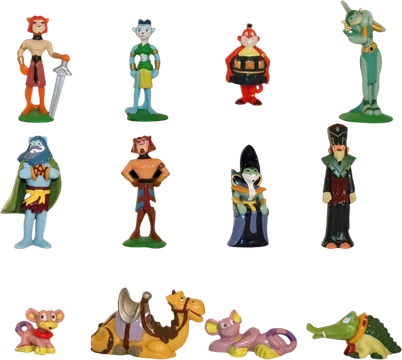
Aida degli Alberi
12 sorpresine
Apri
2003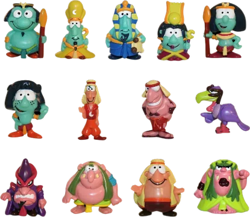
I Lunes
13 sorpresine
Apri
2002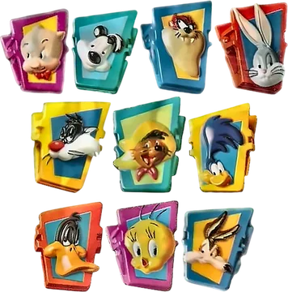
Le Matte Mollette
10 sorpresine
Apri
2002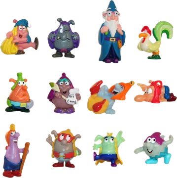
I Magotti
12 sorpresine
Apri
2001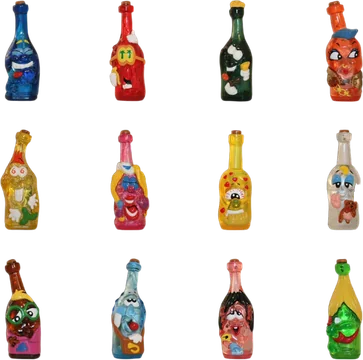
Gli Sbottigliati
12 sorpresine
Apri
2001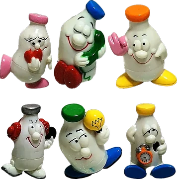
I Lattimbri
6 sorpresine
Apri
2000 · merendine da frigo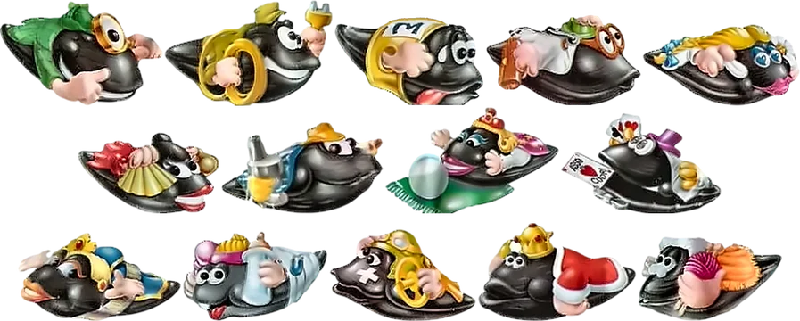
Le Amicozze
14 sorpresine
Apri
2000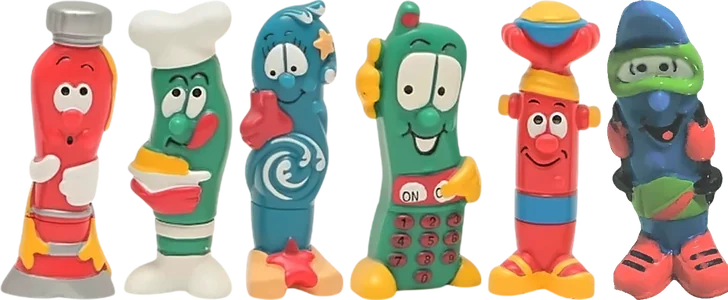
Le Penne Pazze
6 sorpresine
Apri
2000 · merendine da frigo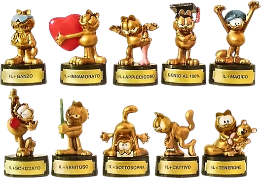
I Golden Garfield
10 sorpresine
Apri
2000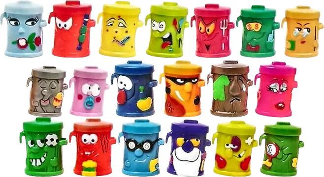
La Banda Bidon
19 sorpresine
Apri
1999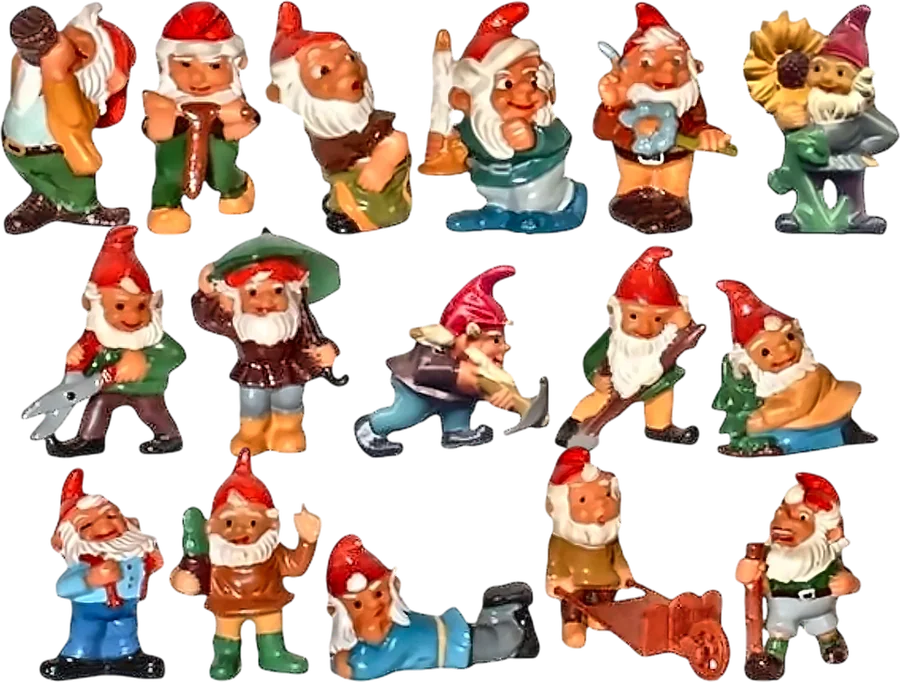
Gnomburloni
16 sorpresine
Apri
1993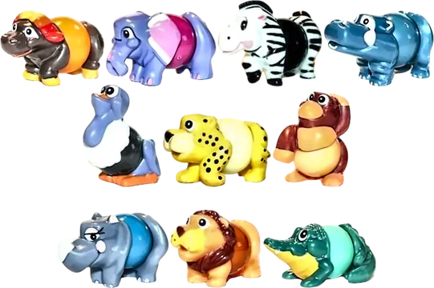
Svitatelli
10 sorpresine
Apri
1993